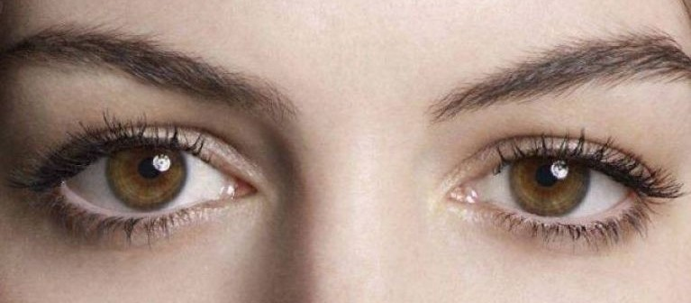
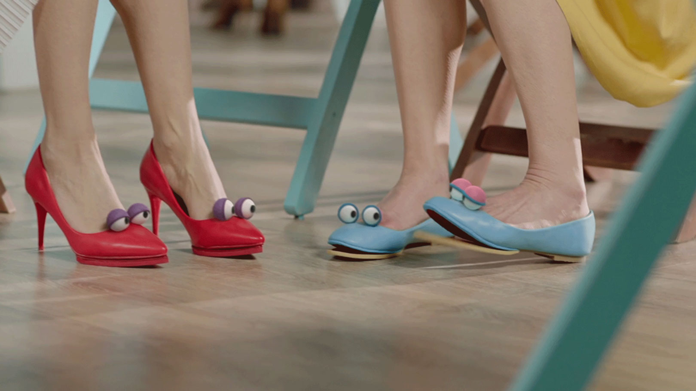
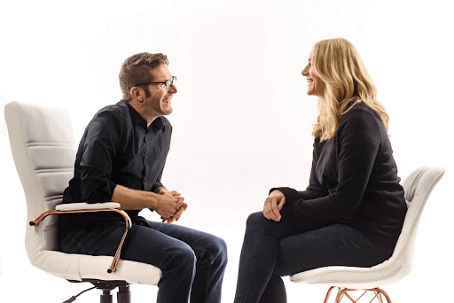

Что такое язык тела?
Язык тела — это ряд невербальных сигналов, которые используются для передачи чувств и намерений.
К ним относятся поза, мимика и жесты рук. Ваша способность понимать и интерпретировать язык тела других
людей может помочь вам уловить невысказанные проблемы или чувства.
Глаза и зрачки

С древних времён считается, что глаза - зеркало души, и это не с проста. Дело в том, что если внимательно
смотреть в глаза вашего собеседника и уметь читать их, то вы суемеете определить его расположение и его отношение к вам. К примеру если вы заметили,
как зрачки вашего собеседника вдруг расширились, то это означает что вы или тема вашего разговора нравится вашему собеседнику.
Но важно знать, что из-за анатомической особенности организма, зрачки так же расширяются при слабом освещении помещения.
Научное исследование
Руки и положение рук
Немаловажным невербальным показателем являются наши руки. То как мы располагаем наши
руки, говорит о нашем психическом и ментальном состоянии. К примеру если человек при выходе на сцену убирает руки за спину,
это индикатор неуверенности и нервозности. Но если выступающий всячески машет руками и старается занимать больше пространсва, то это говорит
о его уверенности. Если при разговоре вы заметили что ваш собеседник скрестил руки, то это значит что он принял защитную позу. Эта поза
может интерпритироваться по разному: вашему собеседнику не комфортно; вашему собеседнику не нравится тема разговора и др;
Научное исследование

Ноги и положение ног
Ещё одним существенным признаком языка тела являются ноги и движения ног. Так, когда человек испытывает
сильное волнение, например перед публичным выступлением или спортивными соревнованиями, его ноги могут подергиваться. Так тело снимает скопившееся
напряжение. А если человек находится в стрессовой ситуации и хочет избавиться от некомфортных ощущений, но не может эмоционально выговориться, он начнет
дергать ногами. Если во время разговоря вы заметили как стопа вашего собеседника указаны в сторону двери или выхода, то к сожалению, ему не интресна
ваша компания и он желает поскорее покинуть вас. "В ногах правда есть."

Корпус и Барьеры
Расстояние, которое человек держит при разговоре с вами, также может дать вам подсказку о его настроении или
отношении к вам. Имейте в виду, что многие люди просто предпочитают держать дистанцию между собой и другими, особенно с незнакомыми. С учетом
вышесказанного, некоторые конкретные модели поведения могут говорить о следующем:
- Тот, кто часто взаимодействует с вами, вероятно, получает удовольствия от вашей компании.
- Если вы подходите к человеку, а он делает шаг назад, скорее всего, он не желает этого и хочет сохранить дистанцую между вами.
- Если ваш собеседник ставит между вами сумку, бутылку, пенал и тп. - он ставит условный барьер между вами и не
хочет чтобы вы приблизились. Научное исследование

If you are reading this, you are curious as fvck